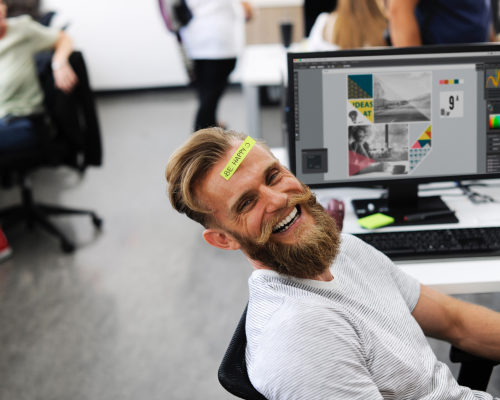

Отдых: как не превратиться в «загнанную лошадь»
Чтобы хорошо отдохнуть, над этим надо хорошо потрудиться
Кащеев Е.При слове «тайм-менеджмент» у многих возникает ассоциация с унылыми серыми буднями, полными работы, стрессов и проблем. Как можно работать, записывая все в блокнот, считая каждую минуту и следуя графику. А как же свободное время? Личное пространство? Отдых, в конце концов? Это распространенное заблуждение! На самом деле теория тайм-менеджмента уделяет огромное внимание правильной и эффективной организации отдыха. Потому что никто не вечен, батарейки садятся у всех, да и ресурсы нервной системы не безграничны. Про опасности синдрома «Кароси» ты уже читал в предыдущих выпусках. Следовательно, для того чтобы качественно и эффективно работать, нужно уметь хорошо отдыхать.
Так каким же должен быть эффективный отдых?
Наука тайм-менеджмента это не столько про количество времени, сколько про его качество. Можно тратить меньше рабочих часов, а выполнять гораздо больший объем работ. Точно так же качество отдыха зависит не от того, сколько часов ты на него потратил, а от того, каким был этот отдых. Я предложу ряд советов, которые, надеюсь, помогут вам сделать свой отдых действительно эффективным.
-
Ритмичный отдых, т.е. регулярными отрезками через определенные промежутки времени в течение рабочего дня
Обычно он складывается стихийно. Отвлекся на несколько минут на комментарии в соцсетях, позвонил знакомый – поболтал с ним, выпил чашечку кофе, зашел коллега из другого отдела обсудить последние новости. Такой несистемный отдых чреват двумя крайностями: случай отдохнуть может так и не представиться, и накопившаяся усталость будет снижать твою работоспособность. Либо наоборот, такие перерывы будут занимать тебя полностью и бесконтрольно, что в итоге приведет к увеличению временных затрат.
Все просто: используй небольшой запланированный отдых через строго определенные промежутки времени. Вспомни школу и вуз: урок - 45 минут, «пара» - 1,5 часа. Перемена 10 минут. Эти цифры взяты не с потолка. Преподаватели, врачи и психологи рекомендуют отдыхать каждые полтора часа по 10-15 минут. Этих же рекомендаций придерживаются бизнес-тренеры при проведении аудиторных занятий.
Как бы ни был загружен ваш рабочий день, какой бы аврал ни царил в офисе – найдите эти 10 минут каждые 1,5 часа, работа без них крайне неэффективна.
-
«Максимальное переключение» в отдыхе
Владимир Маяковский, который был одним из идеологов и популяризаторов советского движения научной организации труда, выразил принцип максимального переключения в простом лозунге:
- Утром выполнять зарядку 20–30 минут. Даже несложная зарядка тонизирует мышцы тела и пробуждает нервную систему, дает мощный заряд бодрости на целый день.
- Если офис находится недалеко, не добираться до него на транспорте, а пройтись пешком. Пешие прогулки улучшают кровообращение, а ещё помогают сжигать калории.
- Если офис находится на высоком этаже, не ехать на лифте, а пройти наверх хотя бы несколько пролетов. Это отличная возможность потренировать сердце и лёгкие :).
- Не коротать обеденное время в кафетерии, а пройтись по улицам. Смена обстановки и окружения помогает сместить точку внимания и приводит к новым решениям.
- Перед сном полезно делать спокойные физические упражнения. Тело успевает расслабиться и подустать, благодаря чему засыпание пройдет легко. Простые движения помогают снять усталость с позвоночника и мышц организма. Оптимально проводить их за час до сна.